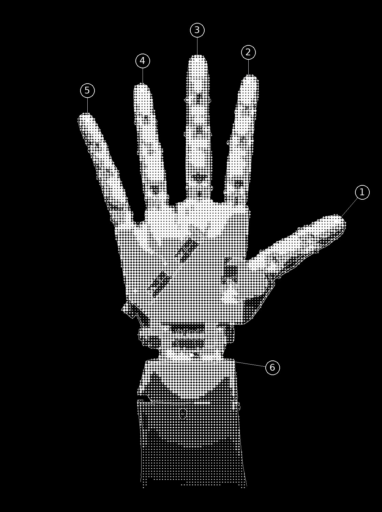
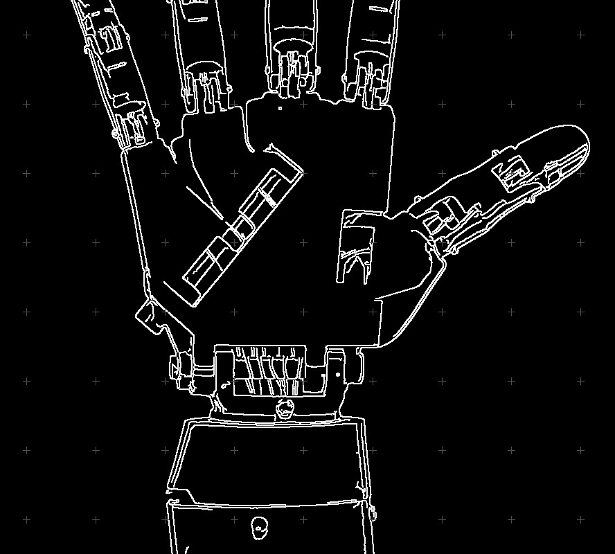

Tradução de Libras através de Robótica e Visão Computacional

Uma ponte entre tecnologia e acessibilidade. O LibraTronic traduz a Língua Brasileira de Sinais em tempo real através de inteligência artificial e aciona uma prótese robótica biomimética.

Arraste para orbitar em 360° e inspecione a mecânica articular da mão virtual.
Feita por estudantes da Etec de Ilha Solteira, a mão é impressa em 3D e baseada no InMoov, projeto de código aberto criado por Gaël Langevin.
O InMoov é distribuído sob licença CC BY-NC, que permite uso não comercial com crédito ao autor.
Entrada de Texto
Digite A–Z · Enter traduz · Reconhece sinais compostos automaticamente
Sinais Rápidos em Libras
Datilologia Interativa (A–Z)
Telemetria do Sistema
Simulador Cinético 3D
THREE.JS WEBGLAguardando entrada ou seleção A–Z...
Arraste para orbitar · Scroll para zoom · Trajetórias de J e Z com rastro espacial
Análise biomecânica de ângulos articulares · Filtro cinemático anti-spam · Trajetórias de J e Z
Letra Detectada
VISÃO COMPUTACIONALAguardando câmera...
Palavra / Frase Formada
Sustente o sinal estático por ~0.85s para confirmar · Desenhe J (mindinho) ou Z (indicador) no ar
Procedimento de pareamento:
1. Ligue a alimentação do controlador ESP32 (LibraTronic)
2. Selecione Conectar abaixo
3. Escolha "LibraTronic" na janela do navegador
4. Aguarde a confirmação de telemetria ativa
SERVIÇO BLE 0000FFE0-0000-1000-8000-00805F9B34FB
CARACTERÍSTICA 0000FFE1-0000-1000-8000-00805F9B34FB
BAUD RATE 115200 bps
PROTOCOLO <CMD_LETRA> / <CMD_GESTO>
Índice de Datilologia Libras (A–Z)
Selecione qualquer letra para inspecionar sua configuração articular:
Arquitetura Mecânica & Digital:
• Trajetória Espacial: Sinais dinâmicos (J, Z, H, K, X) descrevem vetores tridimensionais contínuos no espaço.
• Atuação Biomimética: Cascata de tendões mecânicos independentes (MCP → PIP → DIP) impressos em polímero branco de alta precisão.